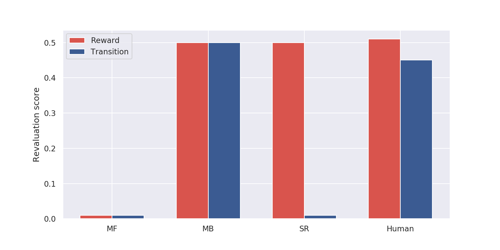
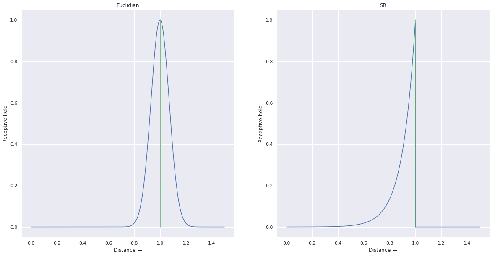

Successor Representations
1 Motivation
1.1 Model-free vs. model-based RL
There are two main families of reinforcement learning (RL, Sutton and Barto, 2017) algorithms:
- Model-free (MF) methods estimate the value of a state V^\pi(s) or of a state-action pair Q^\pi(s, a) by sampling trajectories and averaging the obtained returns (Monte-Carlo control), or by estimating the Bellman equations (Temporal difference - TD):
V^\pi(s) = \mathbb{E}_{\pi} [\sum_{k=0} \gamma^k \, r_{t+k+1} | s_t = s] = \mathbb{E}_{\pi} [r_{t+1} + \gamma \, V^\pi(s_{t+1}) | s_t = s]
Q^\pi(s, a) = \mathbb{E}_{\pi} [\sum_{k=0} \gamma^k \, r_{t+k+1} | s_t = s, a_t = a] = \mathbb{E}_{\pi} [r_{t+1} + \gamma \, Q^\pi(s_{t+1}, a_{t+1}) | s_t = s, a_t = a]
- Model-based (MB) methods use (or learn) a model of the environment - transition probabilities p(s_{t+1} | s_t, a_t) and reward probabilities r(s_t, a_t, s_{t+1}) - and use it to plan trajectories maximizing the theoretical return, either through some form of forward planning (search tree) or using dynamic programming (solving the Bellman equations directly).
\pi^* = \text{argmax}_{\pi} \; p(s_0) \, \sum_{t=0}^\infty \gamma^t \, p(s_{t+1} | s_t, a_t) \, \pi(s_t, a_t) \, r(s_t, a_t, s_{t+1})
V^*(s) = \max_a \sum_{s'} p(s' | s, a) \, (r(s_t, a, s')+ \gamma \, V^*(s'))
The main advantage of model-free methods is their speed: they cache the future of the system into value functions. When having to take a decision at time t, we only need to look at the action with the highest Q-value in the state s_t and take it. If the Q-values are optimal, this is the optimal policy. Oppositely, model-based algorithms have to plan sequentially in the state-action space, which can be very long if the problem has a long temporal horizon.
The main drawback of MF methods is their inflexibility when the reward distribution changes. When the reward associated with a transition changes (the source of reward has vanished, its nature has changed, the rules of the game have changed, etc), each action leading to that transition has to be experienced multiple times before the corresponding values reflect that change. This is due to the use of the temporal difference (TD) algorithm, where the reward prediction error (RPE) is used to update values:
\delta_t = r_{t+1} + \gamma \, V^\pi(s_{t+1}) - V^\pi(s_t)
\Delta V^\pi(s_t) = \alpha \, \delta_t
When the reward associated to a transition changes drastically, only the last state (or action) is updated after that experience (unless we use eligibility traces). Only multiple repetitions of the same trajectory would allow changing the initial decisions. This is opposite to MB methods, where a change in the reward distribution would very quickly influence the planning of the optimal trajectory. In MB, the reward probabilities can be estimated with:
\Delta r(s_t, a_t, s_{t+1}) = \alpha \, (r_{t+1} - r(s_t, a_t, s_{t+1}))
with r_{t+1} being the reward obtained during one sampled transition. The transition probabilities can also be learned from experience using:
\Delta p(s' | s_t, a_t) = \alpha \, (\mathbb{I}(s_{t+1} = s') - p(s' | s_t, a_t))
where \mathbb{I}(b) is 1 when b is true, 0 otherwise. Depending on the learning rate, changes in the environment dynamics can be very quickly learned by MB methods, as updates do not depend on other estimates (there is no bootstrapping contrary to TD).
1.2 Goal-directed behavior vs. habits
The model-free RPE has become a very influential model of dopaminergic (DA) activation in the ventral tegmental area (VTA) and substantia nigra pars compacta (SNc). At the beginning of classical Pavlovian conditioning, DA cells react phasically to unconditioned stimuli (US, rewards). After enough conditioning trials, DA cells only react to conditioned stimuli (CS), i.e. stimuli which predict the delivery of a reward. Moreover, if the reward is omitted, DA cells exhibit a pause in firing. This pattern of activation corresponds to the RPE: DA cells respond to unexpected reward events, either positively when more reward than expected is received, or negatively when less reward is delivered. The simplicity of this model has made RPE a successful model of DA activity (but see Vitay and Hamker (2014) for a more detailed model).
A similar but not identical functional dichotomy as MF/MB opposes deliberative goal-directed behavior and inflexible stimulus-response associations called habits (Dickinson and Balleine, 2002). Goal-directed behavior is sensitive to reward devaluation: if an outcome was previously rewarding but ceases to be (for example, a poisonous product is injected into some food reward, even outside the conditioning phase), goal-directed behavior would quickly learn to avoid that outcome, while habitual behavior will continue to seek for it. Over-training can transform goal-directed behavior into habits (Corbit and Balleine, 2011). Habits are usually considered as a model-free learning behavior, while goal-directed behavior implies the use of a world model. The dual system theory discusses the arbitration mechanisms necessary to coordinate these two learning frameworks (Lee et al., 2014).
Both forms of behavior are thought to happen concurrently in the brain, with model-based / goal-directed behavior classically assigned to the prefrontal cortex and the hippocampus and model-free / habitual behavior mapped to the ventral basal ganglia and the dopaminergic system. However, recent results and theories suggest that these two functional systems are largely overlapping and that even dopamine firing might reflect model-based processes (Doll et al., 2012; Miller et al., 2018). It is yet to be understood how these two extreme mechanisms of the RL spectrum might coexist in the brain and be coordinated: successor representations might provide us with additional useful insights into the functioning of the brain.
2 Successor representations in reinforcement learning
2.1 Main idea
The original formulation of successor representations (SR) is actually not recent (Dayan, 1993), but it is subject to a revival since a couple of years with the work of Samuel J. Gershman and colleagues (Gardner et al., 2018; Gershman et al., 2012; Gershman, 2018; Momennejad et al., 2017; Stachenfeld et al., 2017).
The SR algorithm learns two quantities:
- The expected immediate reward received after each state:
r(s) = \mathbb{E}_{\pi} [r_{t+1} | s_t = s]
- The expected discounted future state occupancy (the SR itself):
M(s, s') = \mathbb{E}_{\pi} [\sum_{k=0}^\infty \gamma^k \, \mathbb{I}(s_{t+k+1} = s') | s_t = s]
I omit here the dependency of r and M on the policy itself in the notation, but it is of course implicitly there.
The SR represents the fact that a state s' can be reached after s, with a value decreasing with the temporal gap between the two states: states occurring in rapid succession will have a high SR, very distant states will have a low SR. If s' happens consistently before s, the SR should be 0 (causality principle). This is in principle similar to model-based RL, but without an explicit representation of the transition structure: it only represents how states are temporally correlated, not which action leads to which state.
The value of a state s is then defined by:
V^\pi(s) = \sum_{s'} M(s, s') \, r(s')
The value of a state s depends on which states s' can be visited after it (following the current policy, implicitly), how far in the future they will happen (discount factor in M(s, s')) and how much reward can be obtained immediately in those states (r(s')). Note that it is merely a rewriting of the definition of the value of a state, with rewards explicitly separated from state visitation and time replaced by succession probabilities:
V^\pi(s_t) = \mathbb{E}_{\pi} [\sum_{k=0} \gamma^k \, r_{t+k+1}] = \mathbb{E}_{\pi} [\sum_{k=0} r(s_{t+k+1}) \times (\gamma^k \, \mathbb{I}(s_{t+k+1}))]
The SR also obeys a recursive relationship similar to the Bellman equation, as it is based on a discounted sum:
M(s_t, s') = \mathbb{I}(s_t = s') + \gamma \, M(s_{t+1}, s')
The discounted probability of arriving in s' after being in s_t is one if we are already in s', and gamma times the discounted probability of arriving in s' after being in the next state s_{t+1} otherwise.
This recursive relationship implies that we are going to be able to estimate the SR M(s, s') using a sensory prediction error (SPE) similar to the TD RPE (Gershman et al., 2012):
\delta^\text{SR}_t = \mathbb{I}(s_t = s') + \gamma \, M(s_{t+1}, s') - M(s_t, s')
\Delta M(s_t, s') = \alpha \, \delta^\text{SR}_t
The SPE states that the expected occupancy for states that are visited more frequently than expected (positive sensory prediction error) should be increased, while the expected occupancy for states that are visited less frequently than expected (negative sensory prediction error) should be decreased. In short: is arriving in this new state surprising? It should be noted that the SPE is defined over all possible successor states s', so the SPE is actually a vector.
We can already observe that SR is a trade-off between MF and MB methods. A change in the reward distribution can be quickly tracked by SR algorithms, as the immediate reward r(s) can be updated with:
\Delta r(s) = \alpha \, (r_{t+1} - r(s))
However, the SR M(s, s') uses other estimates for its update (bootstrapping), so changes in the transition structure may take more time to propagate to all state-state discounted occupancies (Gershman, 2018).
2.2 Linear function approximation
Before looking at the biological plausibility of this algorithm, we need to deal with the curse of dimensionality. The SR M(s, s') is a matrix associating each state of the system to all other states (size |\mathcal{S}| \times |\mathcal{S}|). This is of course impracticable for most problems and we need to rely on function approximation. The simplest solution is to represent each state s by a set of d features [f_i(s)]_{i=1}^d. Each feature can for example be the presence of an object in the scene, some encoding of the position of the agent in the world, etc. The SR for a state s only needs to predict the expected discounted probability that a feature f_j will be observed in the future, not the complete state representation. This should ensure generalization across states, as only the presence of relevant features is needed. The SR can be linearly approximated by:
M_j(s) = \sum_{i=1}^d w_{i, j} \, f_i(s)
The expected discounted probability of observing the feature f_j in the future is defined as a weighted sum of the features of the state s. The value of a state is now defined as:
V^\pi(s) = \sum_{j=1}^d M_j(s) \, r(f_j) = \sum_{j=1}^d r(f_j) \, \sum_{i=1}^d w_{i, j} \, f_i(s)
where r(f_j) is the expected immediate reward when observing the feature f_j, what can be easily tracked as before. Computing the value of a state based on the SR now involves a double sum over a d \times d matrix, d being the number of features, what should generally be much more tractable than over the total number of states squared.
As we use linear approximation, the learning rule for the weights w_{i, j} becomes linearly dependent on the SPE:
\delta^\text{SR}_t(f_j) = f_j(s_t) + \gamma \, M_j(s_{t+1}) - M_j(s)
\Delta w_{i, j} = \alpha \, \delta^\text{SR}_t(f_j) \, f_i(s_t)
The SPE tells us how surprising is each feature f_j when being in the state s_t. This explains the term sensory prediction error: we are now not learning based on how surprising rewards are anymore, but on how surprising the sensory features of the outcome are. Did I expect that door to open at some point? Should this event happen soon? What kind of outcome is likely to happen? As the SPE is now a vector for all sensory features, we see why successor representation have a great potential: instead of a single scalar RPE dealing only with reward magnitudes, we now can learn from very diverse representations describing the various relevant dimensions of the task. It can then deal with different rewards: food and monetary rewards are treated the same by RPEs, while we can distinguish them with SPEs.
The main potential problem is of course to extract the relevant features for the task, either by hand-engineering them or through learning (one could work in the latent space of a variational autoencoder, for example). Feature-based state representations still have to be Markovian for SR to work. It is also possible to use non-linear function approximators such as deep networks Machado et al. (2018), but this is out of the scope of this post.
2.3 Successor representations of actions
The previous sections focused on the successor representation of states to obtain the value function V^\pi(s). The same idea can be applied to state-action pairs and their Q^\pi(s, a) values. The Q-value of a state action pair can be defined as:
Q^\pi(s, a) = \sum_{s', a'} M(s, a, s', a') \, r(s', a')
where r(s', a') is the expected immediate reward obtained after (s', a') and M(s, a, s', a') is the SR between the pairs (s, a) and (s', a') as in Momennejad et al. (2017). Ducarouge and Sigaud (2017) use a SR representation between a state-action pair (s, a) and a successor state s':
Q^\pi(s, a) = \sum_{s'} M(s, a, s') \, r(s')
In both cases, the SR can be learned using a sensory prediction error, such as:
\delta^\text{SR}_{s_t, a_t} = \mathbb{I}(s_t = s') + \gamma \, M(s_{t+1}, a_{t+1}, s') - M(s_t, a_t, s')
Note that eligibility traces can be used in SR learning as easily as in TD methods.
3 Successor representations in neuroscience
3.1 Human goal-directed behavior
So great, we now have a third form of reinforcement learning. Could it be the missing theory to explain human reinforcement learning and the dichotomy goal-directed behavior / habits?
Momennejad et al. (2017) designed a two-steps sequential learning task with reward and transition revaluations. In the first learning phase, the subjects are presented with sequences of images (the states) and obtain different rewards (Fig. 1). The sequence 1 \rightarrow 3 \rightarrow 5 is rewarded with 10 dollars while the sequence 2 \rightarrow 4 \rightarrow 6 is rewarded with 1 dollar only. Successful learning is tested by asking the participant whether he/she prefers the states 1 or 2 (the answer is obviously 1).

In the reward revaluation task, the transitions 3 \rightarrow 5 and 4 \rightarrow 6 are experienced again in the re-learning phase, but this time with reversed rewards (1 and 10 dollars respectively). In the transition revaluation task, the transitions 3 \rightarrow 6 and 4 \rightarrow 5 are now experienced, but the states 5 and 6 still receive the same amount of reward. The preference for 1 or 2 is again tested at the end of the re-learning phase (2 should now be preferred in both tasks) and a revaluation score is computed (how much the subject changes his preference between the two phases).
What would the different ML methods predict?
Model-free methods would not change their preference in both conditions. The value of the 3 \rightarrow 5 and 4 \rightarrow 6 transitions (reward revaluation) or 3 \rightarrow 6 and 4 \rightarrow 5 (transition revaluation) would change during the re-learning phase, but the transitions 1 \rightarrow 3 and 2 \rightarrow 4 are never experienced again, so the value of the states 1 and 2 can only stay the same, even with eligibility traces.
Model-based methods would change their preference in both conditions. The reward and transition probabilities would both be re-learned completely to reflect the change, so the new value of 1 and 2 can be computed correctly using dynamic programming.
Successor representation methods would adapt to the reward revaluation (r(s) will quickly fit the new reward distribution for the states 5 and 6), but not to the transition revaluation: 6 is never a successor state of 1 in the re-learning phase, so the SR matrix will not be updated for the states 1 and 2.
We have three different mechanisms with testable predictions on these two tasks: the human experiments should tell us which method is the best model of human RL. Well… Not really.

Human participants show a revaluation behavior in the two conditions (reward and transition) somehow in between the model-based and successor representation algorithms. The difference between the reward and transition conditions is statistically significant, so unlike MB, but not as dramatic as for SR. The authors propose a hybrid SR-MB model, linearly combining the outputs of the MB and SR algorithms, and fit it to the human data to obtain a satisfying match. A second task requiring the model to actually take actions confirms this observation.
It is hard to conclude anything definitive from this model and the somehow artificial fit to the data. Reward revaluation was the typical test to distinguish between MB and MF processes, or between goal-directed behavior and habits. This paper suggests that transition revaluation (and policy revaluation, investigated in the second experiment) might allow distinguishing between MB and SR mechanisms, supporting the existence of SR mechanisms in the brain. How MB and SR might interact in the brain and whether there is an arbitration mechanism between the two is still an open issue. Russek et al. (2017) has a very interesting discussion on the link between MF and MB processes in the brain, based on different versions of the SR.
3.2 Neural substrates of successor representations
In addition to describing human behavior at the functional level, the SR might also allow to better understand the computations made by the areas involved in goal-directed behavior, in particular the prefrontal cortex, the basal ganglia, the dopaminergic system, and the hippocampus. The key idea of Gershman and colleagues is that the SR M(s, s') might be encoded in the place cells of the hippocampus (Stachenfeld et al., 2017), which are known to be critical for reward-based navigation. The sensory prediction error (SPE \delta^\text{SR}_t) might be encoded in the activation of the dopaminergic cells in VTA (or in a fronto-striatal network), driving learning of the SR in the hippocampus (Gardner et al., 2018), while the value of a state V^\pi(s) = \sum_{s'} M(s, s') \, r(s') could be computed either in the prefrontal cortex (ventromedial or orbitofrontal) or in the ventral striatum (nucleus accumbens in rats), ultimately allowing action selection in the dorsal BG.
3.2.1 Dopamine as a SPE
The most striking prediction of the SR hypothesis is that the SPE is a vector of prediction errors, with one element per state (in the original formulation) or per reward feature (using linear function approximation, section 2.2). This contrasts with the classical RPE formulation, where dopaminergic activation is a single scalar signal driving reinforcement learning in the BG and prefrontal cortex (Schultz, 1998). Although this would certainly be an advantage in terms of functionality and flexible learning, it remains to be shown whether VTA actually encodes such a feature-specific signal.
Neurons in VTA have a rather uniform response to rewards or reward-predicting cues, encoding mostly the value of the outcome regardless its sensory features, except for those projecting to the tail of the striatum which mostly respond to threats and punishments (Watabe-Uchida and Uchida, 2019). The current state of knowledge seems to rule out VTA as a direct source of SPE signals.
Interestingly, Oemisch et al. (2019) showed that feature-specific prediction errors signals (analogous to the SPE with linear approximation) are detected in the fronto-striatal network including the anterior cingulate area (ACC), dorsolateral prefrontal cortex (dlPFC), dorsal striatum and ventral striatum (VS) / nucleus accumbens (NAcc). These SPE-like signals appear shortly after non-specific RPE signals, first in ACC and then in the rest of the network. This suggests that SPE would actually be the result of a more complex calculation than proposed in the SR hypothesis, involving a network of interconnected areas. A detailed neuro-computational model of this network still has to be proposed.
3.2.2 Hippocampus as a predictive map
Another interesting prediction of the SR hypothesis is that the hippocampus might be the site where the SR matrix is represented (Stachenfeld et al., 2017). In navigation tasks, the so-called place cells in the hippocampus exhibit roughly circular receptive fields centered on different locations in the environment (O’Keefe and Nadel, 1978). Altogether, place cells are thought to provide a sparse code of the animal’s location. Strikingly, place fields change with the environment: moving the animal from a circular to a rectangular environment, or introducing barriers, modifies the distribution of place fields. Additionally, grid cells in the entorhinal cortex (reciprocally connected to the hippocampus) show a hexagonal grid pattern of receptive fields, i.e. a single grid cell responds for several positions of the animal inside the environment (Hafting et al., 2005). Grid cells’ receptive fields also depend on the environment and have been shown to depend on place cells, not the other way around. The mechanism behind the flexibility of place and grid fields is still to be understood.
Stachenfeld et al. (2017) propose that place cells actually encode the SR M(s, s') between the current location s and their preferred location s', rather than simply an Euclidian distance between s and s' as classically used in hippocampal models. Because of the discount rate in the SR and its dependency on the animal’s policy, place fields are then roughly circular (exponentially decreasing) in an open environment, where the animal can theoretically reach any neighboring location from its current position. When constraints are added to the environment, such as walls and barriers, certain transitions are not possible anymore, which will modify the shape of the place fields. This fits with experimental observations, contrary to most models of place field formation using Gaussian receptive fields around fixed locations. Additionally, the SR hypothesis is in agreement with the observation that rewarded locations are represented by a higher number of place cells, as the animal spends more time around them.

Fig. 3 illustrates this prediction: if a rat is placed on a linear track with an obstacle, the place cell whose RF is centered on the obstacle would react identically on both sides of the obstacle using a Euclidian model, while it would only respond on the side it has explored using the SR. When the rat is put on the other side, the SRs would initially be 0 for that cell (but would grow with more exploration).
Stachenfeld et al. (2017) also propose a mechanism for grid cell formation in the entorhinal cortex. Grid cells are understood as a low-dimensional eigendecomposition of the SR place cells (dimensionality reduction, as in principal component analysis). This allows to explain why grid cells change in different environments (circular, rectangular or triangular), as experimentally observed. They also propose a mechanism for sub-goal formation using grid cells, but using the normalized min-cut algorithm, so quite far from being biologically realistic.
4 Discussion
Successor representations are an interesting trade-off between model-free and model-based RL algorithms, explicitly separating state transitions from reward estimation. It allows reacting quickly to distal reward changes without the computational burden of completely model-based planning. Deep RL variants of SR (Kulkarni et al., 2016) obtain satisfying results on classical RL tasks such as Atari games and simulated robots, but are still outperformed by modern model-free algorithms. Similar to human behavior, hybrid architectures using both SR and MF methods might be able to combine the optimality of MF methods with the flexibility of the SR.
At the neuroscientific level, the SR hypothesis raises a lot of interesting questions, especially regarding the interplay between the prefrontal cortex, the hippocampus, and the basal ganglia during goal-directed behavior. Here are just a few aspects that need to be investigated both experimentally and theoretically:
- What is the relationship between the RPE and the SPE? Does VTA compute the SPE (still to be proven) and send it directly to the hippocampus through dopaminergic projections? Or does the RPE VTA somehow “train” ACC and PFC to compute the SPE, what is then sent to the hippocampus to update the SR representation? How?
- How does the hippocampus learn from SPE signals? The SR hypothesis still has to be linked with evidence on plasticity in the hippocampus.
- If dopamine does not carry the SPE, what is the role of the dopaminergic innervation of the hippocampus? The SR representation is in principle independent from rewards (except that animals may spend more time around reward location).
- How is the value of a state / action computed based on the SR representation in the hippocampus? Do sharp wave ripples (SWR, also called forward/inverse replays) actually sample the SR matrix (a list of achievable states from the current one), what is then integrated elsewhere (ventral striatum?) to guide behavior?